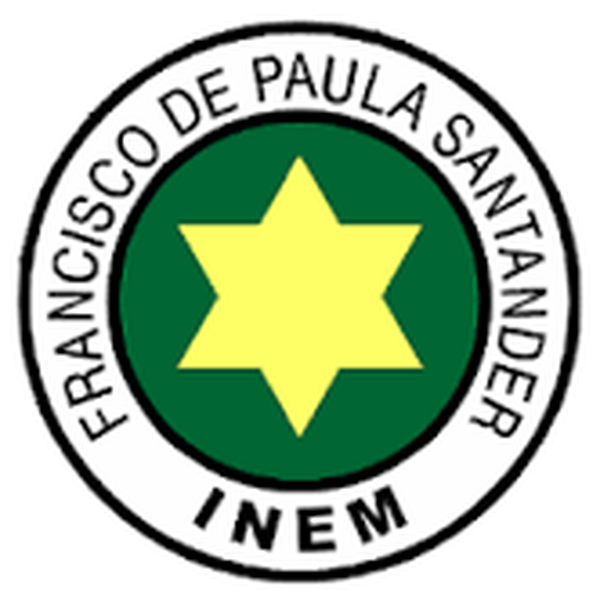

Institución Educativa Distrital
Cuidemos lo públicoLos recursos y bienes de nuestra institución educativa pertenecen a toda la comunidad. Cuidarlos significa proteger nuestro colegio y garantizar que otros estudiantes también puedan disfrutarlos.
Conocer másUna institución educativa pública necesita diferentes recursos para funcionar y ofrecer educación a sus estudiantes.
El Estado destina recursos para garantizar el derecho a la educación y apoyar el funcionamiento de las instituciones educativas públicas.
La Secretaría de Educación administra y distribuye recursos destinados a las necesidades de las instituciones educativas.
Los impuestos que pagan los ciudadanos y las empresas hacen parte de los recursos que administra el Estado para financiar servicios públicos como la educación.
Porque los recursos del colegio son recursos públicos. No pertenecen a una sola persona. Son destinados al beneficio de la comunidad y por eso todos tenemos la responsabilidad de utilizarlos correctamente y cuidarlos.
Los recursos permiten mantener y mejorar los espacios, herramientas y servicios necesarios para la educación.
Herramientas tecnológicas para aprender, investigar y desarrollar actividades académicas.
Sillas, mesas, escritorios y otros elementos necesarios para las actividades escolares.
Reparaciones y mantenimiento de salones, muebles y diferentes espacios.
Servicio necesario para baños, limpieza y diferentes actividades de la institución.
Permite utilizar iluminación, computadores y otros equipos eléctricos.
Libros, materiales y recursos que apoyan los procesos de enseñanza y aprendizaje.
Aulas, baños, patios, zonas deportivas y demás espacios de la institución.
Elementos y servicios necesarios para mantener los espacios limpios y agradables.
Cada estudiante puede contribuir con pequeñas acciones que ayudan a conservar los recursos de toda la comunidad.
Utilizarlos correctamente y evitar golpes, daños o usos inadecuados.
No rayarlos, romperlos ni utilizarlos de manera incorrecta.
Mantenerlos limpios y utilizar correctamente sus instalaciones.
Cerrar las llaves y evitar desperdiciar agua.
Apagar luces y equipos cuando no sean necesarios.
Utilizar responsablemente los materiales educativos y de oficina.
Cuidar salones, patios, pasillos y demás zonas comunes.
Informar a los docentes o directivos cuando encontremos algún daño.
“Cuidar lo público es cuidar aquello que nos pertenece a todos.”
Podemos convertir nuestras ideas en acciones para mejorar el cuidado de nuestra institución.
Responde las 10 preguntas. Para aprobar debes obtener mínimo 80 %.
INEM FRANCISCO DE PAULA SANTANDER
Institución Educativa Distrital
CUIDADO DE LO PÚBLICO
Se certifica que
del curso
Ha aprobado satisfactoriamente la evaluación sobre el cuidado de los recursos y bienes públicos de la institución educativa.
Proyecto educativo
⭐ ¡Felicitaciones por tu compromiso! ⭐